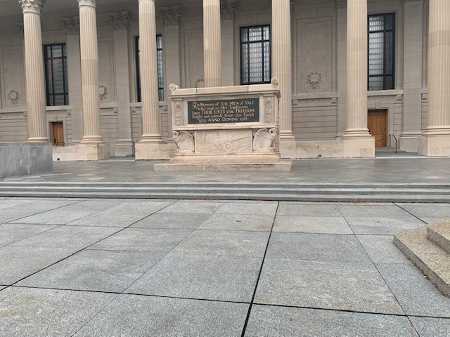
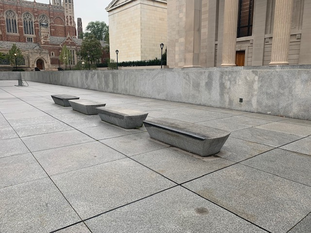

Commons Steps
The commons steps is a 3 stair with really wide and long steps that serve as a great way to start getting comfortable with clearing stairs. The wide design of these steps makes them great for fire cracking, ollying, or simply slowly riding off.
The Benches
The plaza has rows of stone benches scattered around its sides. You might have already noticed that the outside corners of these are a couple of shades darker than the rest of them. This is the product of years of experienced skaters waxing the corners and skating them. These benches are a good 2.5 feet off the ground though so wait until you can constantly Olly up to around that height stationary before trying anything with them.
 Previous page Flip page